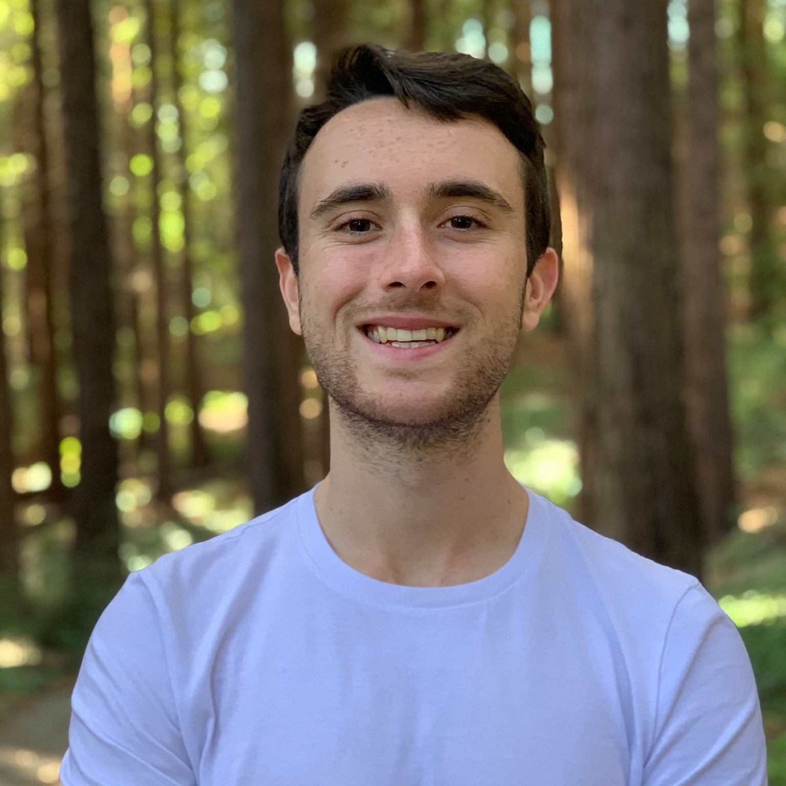
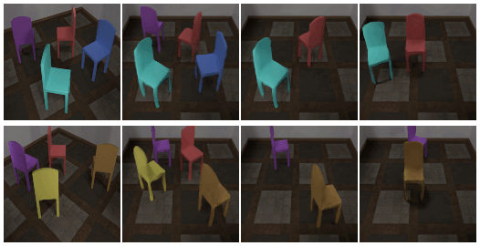

Cameron Smith
I am a recent grad from UC San Diego, where I studied Computer
Science, and am currently working in Vincent Sitzmann's Scene Representation Group on self-supervised 3D representations.
I'm applying to graduate programs.
|
 |
|
FlowCam: Training Generalizable 3D Radiance Fields without Camera Poses via Pixel-Aligned Scene Flow Cameron Smith, Yilun Du, Ayush Tewari, Vincent Sitzmann [Project Page] |
|

|
Unsupervised Discovery and Composition of Object Light Fields Cameron Smith, Hong-Xing "Koven" Yu, Sergey Zakharov, Fredo Durand, Joshua Tenenbaum, Jiajun Wu, Vincent Sitzmann, [Project Page] |